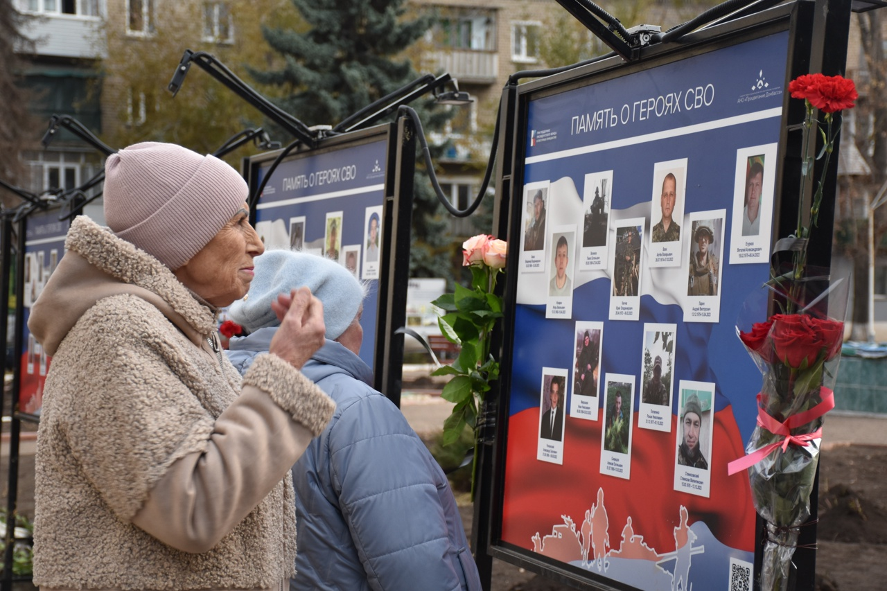

Культурное развитие
Поддерживаем творческие инициативы и создаём условия для диалога поколений.
Сохраняем важное. Создаём будущее.
Поддерживаем социальные инициативы, сохраняем память и создаём пространство для развития жителей Донбасса.
О нас
АНО «Процветание Донбасса» содействует социальному и культурному развитию региона.
Мы создаём проекты, которые соединяют людей, учреждения культуры и общественные инициативы. В центре нашей работы — бережное отношение к человеку, исторической памяти и традициям родного края.
Наша страница ВКонтактеПоддерживаем творческие инициативы и создаём условия для диалога поколений.
Разрабатываем бережные форматы помощи и объединяем людей вокруг значимых задач.
Рассказываем истории земляков и сохраняем их для будущих поколений.
Реализованный проект
Передвижная выставкаВыставочный проект, посвящённый сохранению памяти о земляках. Экспозиция путешествует по учреждениям и общественным пространствам, становясь местом встреч, диалога и общей памяти.

Новый проект
Проект 2026
Бережный маршрут поддержки и общественного признания матерей и жён военнослужащих, участников и погибших защитников Отечества.
“
Проект соединит выбранный самой участницей формат поддержки, профессиональную консультацию при необходимости и добровольную художественную фотосъёмку.
Сейчас команда готовит документы, привлекает профильных специалистов и разрабатывает безопасный маршрут участия. Указанные сроки и показатели являются плановыми.
Онлайн-исследование
АНО «Процветание Донбасса» изучает, какой формат первого знакомства с проектом будет удобным, безопасным и уважительным для матерей и жён военнослужащих.
Участие добровольное. Можно пропустить любой вопрос или прекратить заполнение. Опрос не является психологической диагностикой.
Проекты в кадре

В ДК посёлка Новосветловка прозвучали песни вокально-инструментального ансамбля «Афган». Публикация рассказывает о творчестве коллектива и встрече со зрителями.
Читать в VK
Иллюстрация опубликована в сообществе «Процветание Донбасса». Подробности смотрите в оригинальном материале VK.
Смотреть в VK
В посёлке Новосветловка открылась передвижная фотовыставка, посвящённая памяти защитников Отечества. Проект реализован при участии АНО «Процветание Донбасса».
Читать в VKВидеосюжет о проекте, который сохраняет память о героях специальной военной операции.
Смотреть в VK
Фотоматериал о занятиях участников оздоровительной группы.
Смотреть в VK
Фотоматериал о реализации инициативы при поддержке Президентского фонда культурных инициатив.
Смотреть в VK
Передвижная выставка «Память о Героях СВО» открылась на главной площади города Суходольска.
Читать в VKРепортаж о презентации 35 стендов с портретами погибших военнослужащих и памятных видеоматериалов.
Смотреть в VKБольшой видеоматериал проекта, реализованного при поддержке Президентского фонда культурных инициатив.
Смотреть в VKСюжет о культурной инициативе, поддержанной Президентским фондом культурных инициатив.
Смотреть в VK
Фотография из проекта, реализуемого при поддержке Президентского фонда культурных инициатив.
Смотреть в VKРазвёрнутый видеоматериал об инициативе, поддержанной Президентским фондом культурных инициатив.
Смотреть в VKКороткий видеосюжет о патриотическом выставочном проекте.
Смотреть в VKСюжет о создании патриотической выставки, посвящённой героям СВО из Краснодонского округа.
Смотреть в VKВидео о ходе проекта при поддержке Президентского фонда культурных инициатив.
Смотреть в VK
Подписано соглашение с АНО «Мои года — моё богатство» и намечены идеи социальных проектов для Краснодонского округа.
Читать в VK
АНО приняла участие в двухдневной мастерской Уральской сети ресурсных центров для социально ориентированных НКО.
Читать в VKДелегация Благотворительного фонда развития города Тюмени посетила ЛНР, Краснодон и Молодогвардейск для обмена опытом в сфере НКО.
Смотреть в VKБудем на связи
Следите за новостями, проектами и анонсами мероприятий на нашей официальной странице.